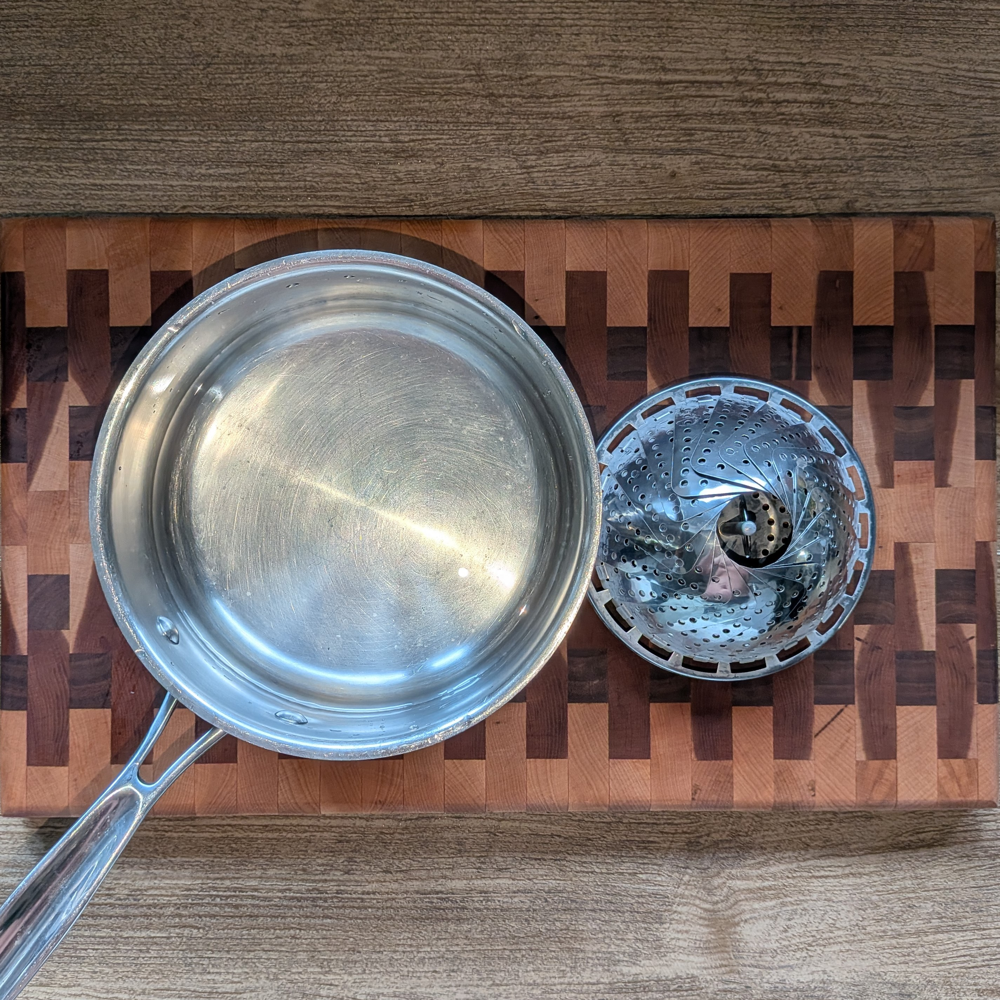
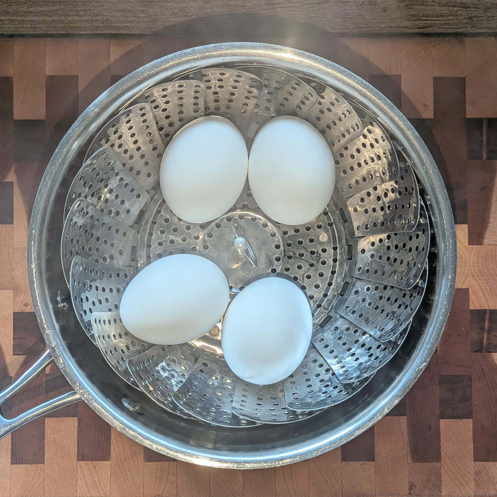
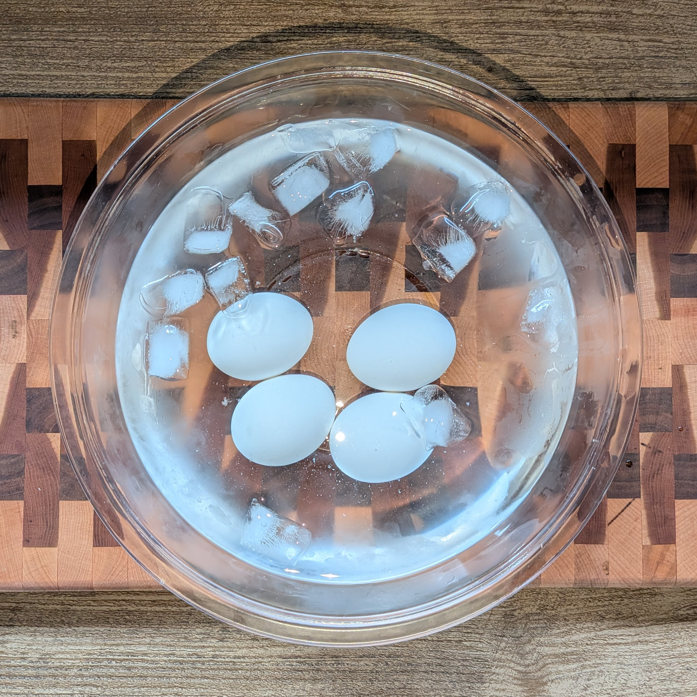
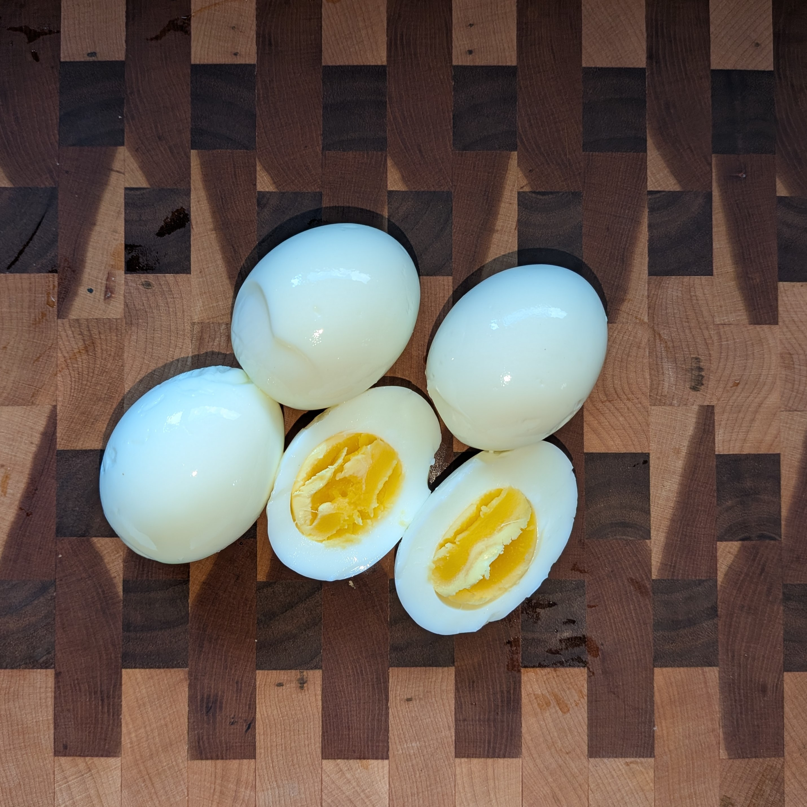

STEAM-BOILED
| If your eggs are refrigerated, add an extra minute to the steaming time. |
| 1 | Add about an inch of water to a pot and place an expanding steamer ring inside. |
| 2 | Place the pot over high heat, cover, and bring the water to a rolling boil. |
| 3 | Carefully place the eggs into the steamer basket - or directly into the water if you don't have one - then cover and reduce heat to medium-high. |
| 4 | Cook for 6½ mins for a runny yolk, 8 mins for jammy yolk, or 12 mins for firm. |
| 5 | Immediately transfer eggs to an ice bath for 5 minutes to stop the cooking process, then peel and serve. |



